Errores y potencia estadística
¿Qué puede salir mal al tomar una decisión?
26 de septiembre de 2026
De los datos a una decisión
Datos → estadístico → evidencia frente a \(H_0\) → decisión
Ya sabemos rechazar \(H_0\) o no rechazar \(H_0\).
¿Podemos equivocarnos al tomar esa decisión?
Dos decisiones, dos estados posibles
| Decisión | H₀ verdadera | H₀ falsa |
|---|---|---|
| Rechazar H₀ | Error Tipo I | Decisión correcta |
| No rechazar H₀ | Decisión correcta | Error Tipo II |
La decisión se toma con los datos. El estado real de la población no lo conocemos con certeza.
Falso positivo y falso negativo
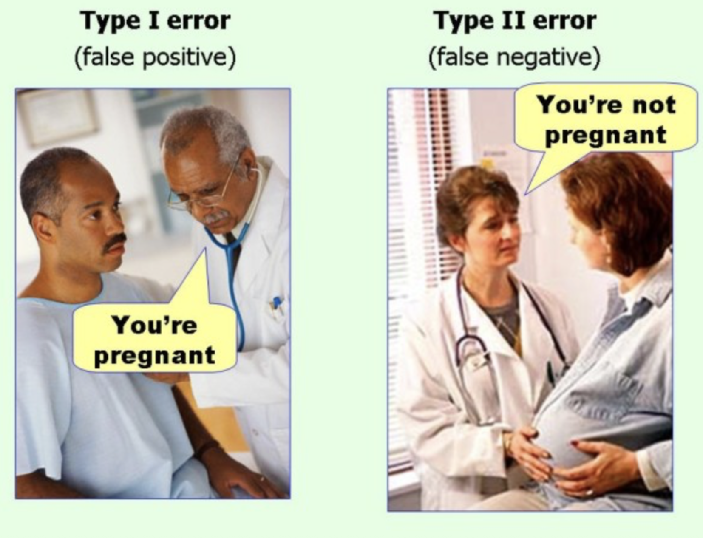
Tipo I · falso positivo
Detectar algo que no existe.
Tipo II · falso negativo
No detectar algo que existe.
Analogías para recordar los errores. Sus definiciones se expresan respecto de \(H_0\).
Un fertilizante bajo evaluación
¿El nuevo fertilizante modifica el rendimiento medio del maíz respecto del manejo habitual?
Población de referencia: posibles parcelas de maíz bajo las condiciones de zona agroecológica, campaña, suelo y manejo definidas para este ensayo didáctico.
Unidad experimental: una parcela. Tratamientos asignados aleatoriamente a parcelas independientes.
\(\Delta\mu=\mu_F-\mu_H\quad\text{(t/ha)}\)
\[H_0:\Delta\mu=0\qquad H_1:\Delta\mu\ne0\]
F: fertilizante; H: manejo habitual. Nos interesan aumentos y disminuciones. El alcance de la inferencia queda restringido a las condiciones definidas.
Los tratamientos se asignan a parcelas
18 parcelas: una representación del diseño, no un cálculo de tamaño muestral.
Los tratamientos se asignan aleatoriamente, antes de observar el rendimiento.
Equivocarse tiene consecuencias
ERROR TIPO I
Detectar una modificación inexistente.
Una aparente mejora puede llevar a recomendar un producto innecesario: más costos, uso de insumos e impactos ambientales.
ERROR TIPO II
No detectar una modificación real.
Si es una mejora, podemos descartar una alternativa útil: perder rendimiento y beneficios económicos.
La gravedad relativa depende del problema y de las consecuencias de ambos errores.
\(\alpha\): errores cuando H₀ es verdadera
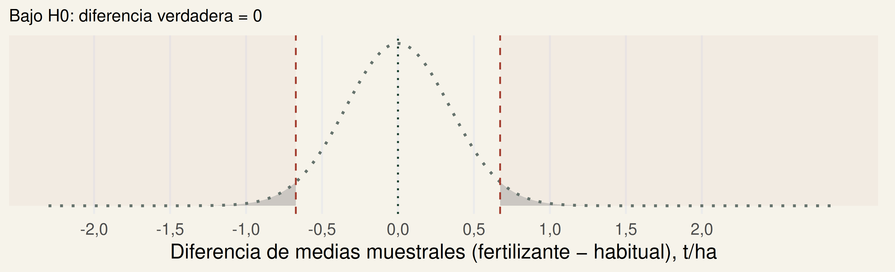
Con \(\alpha=0{,}05\), si \(H_0\) fuera verdadera y repitiéramos muchas veces este procedimiento, aproximadamente el 5% de las decisiones rechazaría \(H_0\) por error.
Bajo los supuestos del procedimiento. No significa que esta decisión particular tenga un 5% de probabilidad de ser incorrecta. Modelo normal didáctico de la diferencia de medias.
\(\beta\): un efecto real puede pasar inadvertido
¿De dónde sale 0,6 t/ha?
Para calcular \(\beta\) debemos especificar una alternativa: preguntarnos qué ocurriría si la verdadera diferencia poblacional fuera, por ejemplo, 0,6 t/ha.
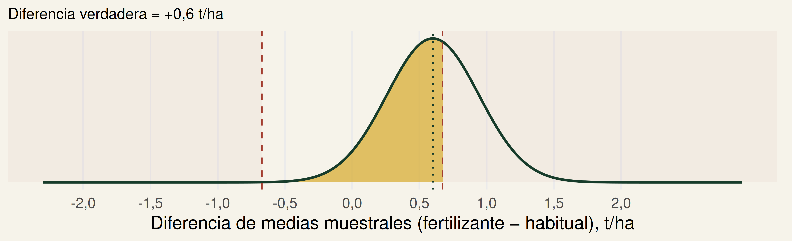
\(\beta\): probabilidad de no rechazar \(H_0\) cuando existe esta diferencia verdadera. Conservamos la regla de decisión anterior.
Potencia para ese efecto
Supongamos una diferencia verdadera de +0,60 t/ha.
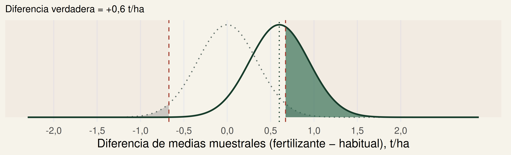
Curva punteada gris: \(H_0\) · curva verde: \(H_A\)
Área gris: \(\alpha\) · amarilla: \(\beta\) · verde: potencia \(=1-\beta\)
Potencia \(=1-\beta\approx 0,42\): probabilidad de rechazar \(H_0\) cuando la diferencia verdadera es +0,60 t/ha.
¿Potencia para detectar qué magnitud?
Dos escenarios, una misma regla
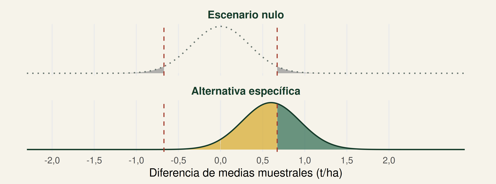
Curva punteada gris: \(H_0\) · curva verde: \(H_A\)
Área gris: \(\alpha\) · amarilla: \(\beta\) · verde: potencia \(=1-\beta\)
\(\alpha\) se calcula bajo \(H_0\). \(\beta\) y \(1-\beta\), bajo una alternativa específica. Los límites de rechazo son los mismos.
Distribuciones muestrales del estimador, no rendimientos individuales. Modelo: n = 17 por tratamiento, σ = 1 t/ha; alternativa +0,60 t/ha, \(\alpha\) = 0,05.
Magnitud del efecto verdadero
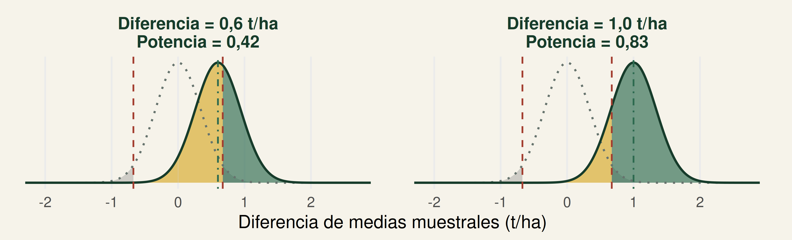
Curva punteada gris: \(H_0\) · curva verde: \(H_A\)
Área gris: \(\alpha\) · amarilla: \(\beta\) · verde: potencia \(=1-\beta\)
Un efecto verdadero mayor es más fácil de detectar. No podemos aumentarlo a voluntad.
Sólo cambia la diferencia verdadera. Constantes: n = 17 por tratamiento, σ = 1 t/ha y \(\alpha\) = 0,05. Escenario normal didáctico.
Más unidades, mayor precisión
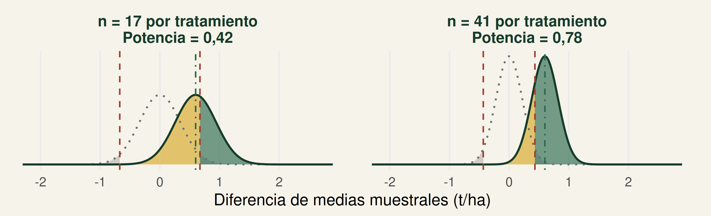
Curva punteada gris: \(H_0\) · curva verde: \(H_A\)
Área gris: \(\alpha\) · amarilla: \(\beta\) · verde: potencia \(=1-\beta\)
Más unidades independientes → menor error estándar → mayor potencia. La diferencia verdadera sigue siendo +0,60 t/ha.
Recordatorio para una media: \(S_{\bar X}=s/\sqrt n\). Para dos medias: \(S_{\Delta\bar X}=\sqrt{s_F^2/n_F+s_H^2/n_H}\). Aquí sólo cambia n; σ = 1 t/ha y \(\alpha\) = 0,05. Los límites se ajustan para conservar \(\alpha\).
La variabilidad también importa
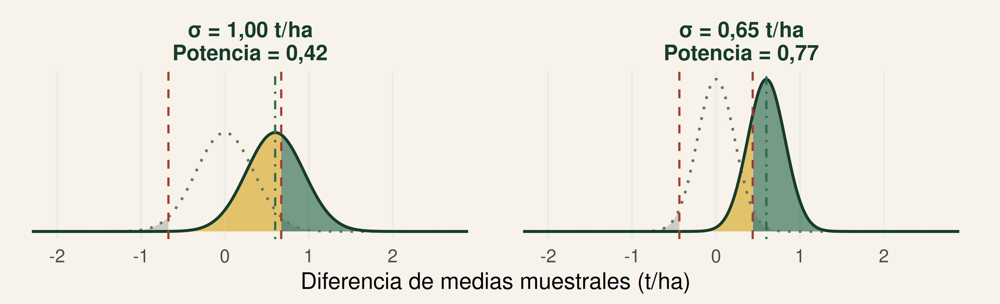
Curva punteada gris: \(H_0\) · curva verde: \(H_A\)
Área gris: \(\alpha\) · amarilla: \(\beta\) · verde: potencia \(=1-\beta\)
Menor variabilidad → menor error estándar → mayor potencia.
Sólo cambia σ; n = 17 por tratamiento, diferencia verdadera = +0,60 t/ha y \(\alpha\) = 0,05. Mediciones precisas, control de condiciones y bloqueo pueden reducir variabilidad residual. El diseño debe justificarlo.
Cambiar \(\alpha\) cambia el criterio
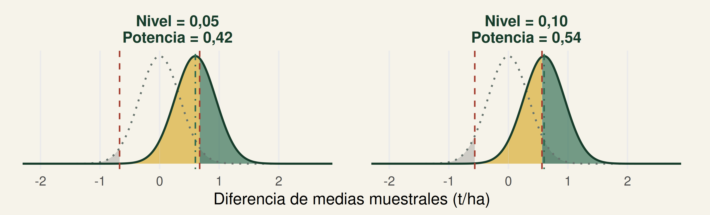
Curva punteada gris: \(H_0\) · curva verde: \(H_A\)
Área gris: \(\alpha\) · amarilla: \(\beta\) · verde: potencia \(=1-\beta\)
Aumentar \(\alpha\) amplía el rechazo y aumenta la potencia, pero también aumenta el riesgo de Error Tipo I.
Sólo cambia \(\alpha\). Constantes: n = 17 por tratamiento, diferencia verdadera = +0,60 t/ha y σ = 1 t/ha. No elegimos \(\alpha\) pensando sólo en maximizar potencia.
Misma magnitud, distinta precisión
Misma magnitud + distinta precisión → distinta capacidad para detectarla
Modelo normal didáctico: dos grupos independientes, n iguales y σ común supuesta. Áreas bilaterales. No es el cálculo exacto de Welch. El ejemplo observado es separado y no calcula potencia post hoc.
El compromiso entre ambos errores
Con n, variabilidad y efecto verdadero fijos:
Reducir \(\alpha\)
Generalmente aumenta \(\beta\): exigimos más evidencia y podemos perder efectos reales.
Aumentar n
Puede reducir \(\beta\) manteniendo \(\alpha\), porque mejora la precisión.
¿Qué consecuencias tendría cada error en este experimento?
El compromiso depende del problema, los recursos y las consecuencias agronómicas, económicas y ambientales.
La mínima diferencia agronómicamente relevante
¿Potencia para detectar qué magnitud?
Para planificar este ejemplo, proponemos 0,60 t/ha como mínima mejora que interesaría detectar.
Supuesto didáctico. No es una recomendación agronómica general.
En un estudio real se justifica antes de observar los resultados: conocimiento agronómico, antecedentes, costos, beneficios y consecuencias prácticas.
Significación estadística ≠ importancia agronómica
El tamaño muestral se piensa antes
Antes del experimento, un análisis de potencia puede ayudar a determinar un tamaño muestral adecuado.
Se necesitan diseño y análisis previstos, \(\alpha\), potencia deseada, diferencia mínima relevante y variabilidad esperada.
La variabilidad puede estimarse con antecedentes, bibliografía, experiencia o un estudio piloto. La potencia deseada se elige según el contexto; 80% no es una ley universal.
El tamaño muestral no debería elegirse por comodidad: debería responder a la pregunta y al diseño del estudio.
Entonces… ¿el mapache tiene razón?
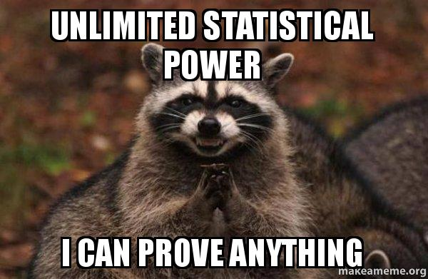
En parte.
Si existe una diferencia poblacional real, aunque sea muy pequeña, suficiente precisión puede permitir detectarla estadísticamente.
Aumentar \(n\) no hace que la diferencia sea mayor.
Si \(H_0\) es exactamente verdadera, mejorar la capacidad de detección no crea un efecto: siguen existiendo falsos positivos controlados por \(\alpha\).
Con suficiente precisión podemos detectar diferencias reales muy pequeñas. La pregunta siguiente es si esas diferencias importan.
SIGNIFICACIÓN ESTADÍSTICA ≠ IMPORTANCIA AGRONÓMICA
Cinco ideas para llevarse
- Una decisión estadística puede ser correcta o incorrecta.
- \(\alpha\) controla el Error Tipo I bajo \(H_0\).
- \(\beta\) es la probabilidad de no detectar un efecto específico que existe.
- \(1-\beta\) es la potencia para ese efecto.
- Planificar exige pensar en diseño, efecto relevante, variabilidad, \(\alpha\), potencia y n.
Fin del núcleo obligatorio · La aplicación que sigue es opcional.
Aplicación: dos experimentos agronómicos
BLOQUE OPCIONAL
Fertilizante y rendimiento de maíz
Dos experimentos didácticos independientes
Primero: la magnitud observada
¿El fertilizante modifica el rendimiento medio del maíz?
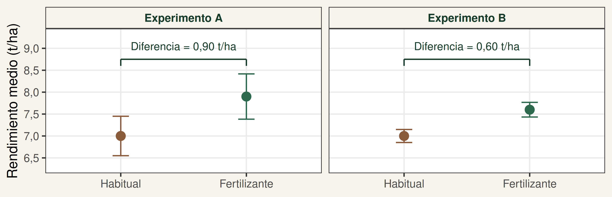
Datos didácticos de dos experimentos independientes. Barras de error: media ± \(S_{\bar X}\) (error estándar de cada media).
¿En cuál experimento parece mayor el efecto del fertilizante?
Las mismas hipótesis, distintos resultados
\[H_0:\Delta\mu=0\qquad H_A:\Delta\mu\ne0\qquad\alpha=0{,}05\]
Welch bilateral en ambos experimentos.
Experimento A
\(p=0,2079\) → no rechazamos \(H_0\).
Experimento B
\(p=0,0096\) → rechazamos \(H_0\).
¿Cómo puede ser que la diferencia observada más pequeña aporte mayor evidencia contra \(H_0\)?
Ahora sí: parcelas y tamaños muestrales
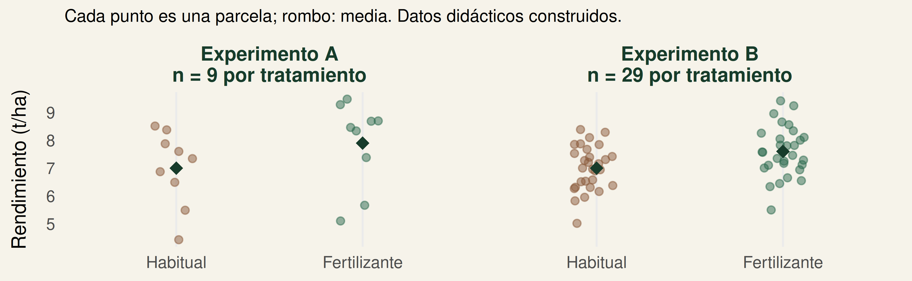
Desviación estándar (habitual / fertilizante): A: 1,35 / 1,55 t/ha; B: 0,80 / 0,90 t/ha. Mismo alcance poblacional y asignación aleatoria a parcelas independientes.
Magnitud observada + variabilidad + tamaño muestral → precisión → evidencia estadística.
No deducimos la potencia de estos experimentos a partir de sus valores p.
Experimento A: diferencia mayor, con incertidumbre
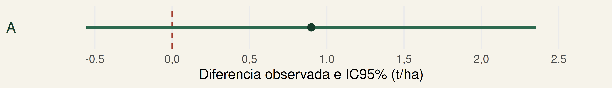
| Diferencia observada | \(S_{\Delta\bar X}\) | \(t\) | \(\delta\) | Valor-p |
|---|---|---|---|---|
| +0,90 t/ha | 0,685 t/ha | 1,314 | 15,70 | 0,2079 |
Para las parcelas de maíz bajo las condiciones de zona, campaña, suelo y manejo definidas, con \(\alpha=0{,}05\), no hay evidencia suficiente de una modificación del rendimiento medio: no rechazamos \(H_0\).
En la muestra, fertilizante: 7,9 frente a 7,0 t/ha con manejo habitual. Diferencia +0,90 t/ha (+12,9% respecto de la media habitual).
IC95% de \(\Delta\mu\): [-0,555; 2,355] t/ha. Incluye cero y diferencias de ambos signos. No demuestra ausencia de efecto.
n = 9 por tratamiento. Desviación estándar: habitual = 1,35; fertilizante = 1,55 t/ha.
Experimento B: diferencia menor, mayor precisión
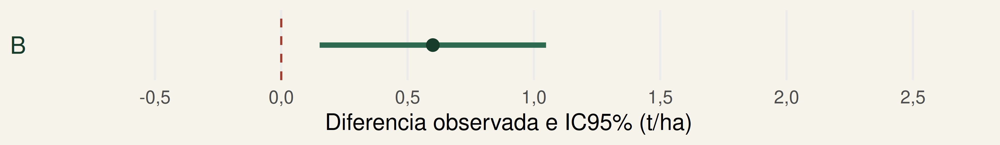
| Diferencia observada | \(S_{\Delta\bar X}\) | \(t\) | \(\delta\) | Valor-p |
|---|---|---|---|---|
| +0,60 t/ha | 0,224 t/ha | 2,683 | 55,24 | 0,0096 |
Para las parcelas de maíz bajo las condiciones de zona, campaña, suelo y manejo definidas, con \(\alpha=0{,}05\), hay evidencia de una modificación del rendimiento medio: rechazamos \(H_0\). El IC positivo respalda un rendimiento medio mayor con fertilizante.
En la muestra, fertilizante: 7,6 frente a 7,0 t/ha con manejo habitual. Diferencia +0,60 t/ha (+8,6% respecto de la media habitual).
IC95% de \(\Delta\mu\): [0,152; 1,048] t/ha. La significación no garantiza importancia agronómica.
n = 29 por tratamiento. Desviación estándar: habitual = 0,80; fertilizante = 0,90 t/ha.
Planificar un próximo experimento
Justificar una diferencia mínima relevante que queremos que nuestra prueba sea capaz de detectar.
- Mínima diferencia agronómicamente relevante.
- Variabilidad esperada obtenida de antecedentes o de un ESTUDIO PILOTO.
- \(\alpha\) y potencia deseada, según consecuencias y recursos.
- Diseño, análisis previsto y unidad experimental.
Para planificar el tamaño muestral antes de realizar el experimento pueden utilizarse análisis de potencia a priori.

Andrés Tálamo - Estadística y Diseño Experimental - UNSa